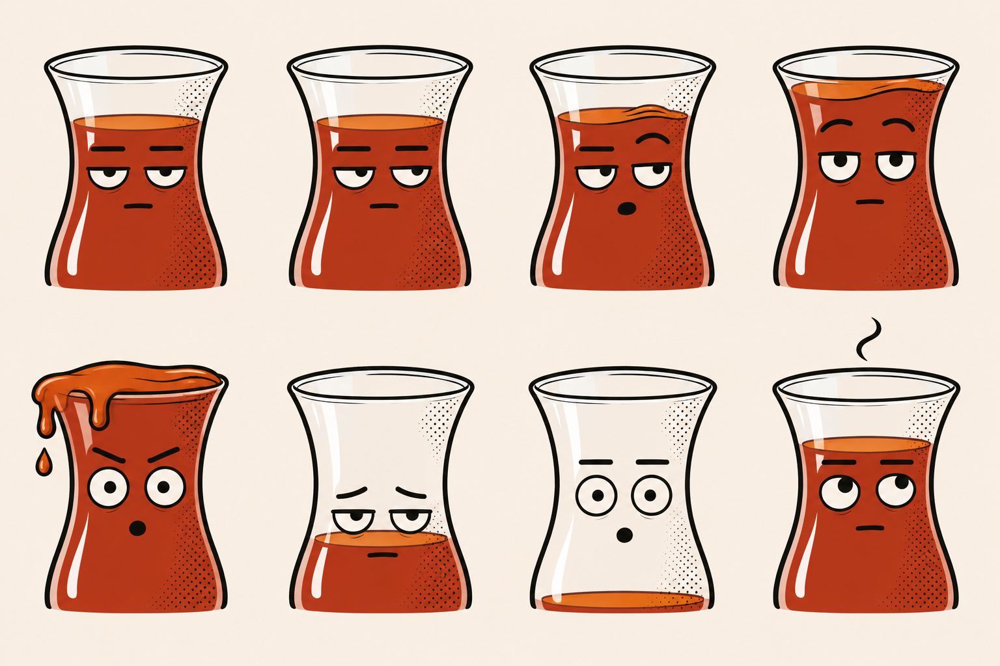

92
çay ölçer · önde
- süre
- 14 dk
- deneme
- 1
- hata
- 0
Aynı görevi, aynı kurallarla verdik. Kim demledi, kim taşırdı?
Tek prompt, tek atış, aynı süre.
Gerisi modelin işi.
Her model aynı masaya oturdu, aynı bardağı aldı.
Bir çay ocağı simülasyonu yaz. Bardaklar dolsun, biri taşsın.görev promptu · örnek metin
Bardak dolmaya yaklaşınca hız düşer, kenardan damla düşer.
} else if (durum === 'dok') {
b.sev += dt * (b.sev > 1 ? 0.15 : 0.62);
b.dalga = 1;
if (b.sev > 1) { // taşma: kenardan damla
b.taskan = (b.taskan || 0) + dt;
if (b.taskan > 0.16) b.damlalar.push(kenar(b));
}
if (b.sev >= b.hedef) durum = 'kalk';
}
Modelin yazdığı sayfa çerçeveye gömülür; model adı tabak etiketinde durur.

Her sonuç bir bardağın doluluğuyla okunur. Çubuk grafik yok.
Bardaklar masada. Kim demledi, kim taşırdı?
Dört modelin toplam çalışma süresi.
Süre, deneme, maliyet.
Çay ocağı fişi gibi, satır satır.